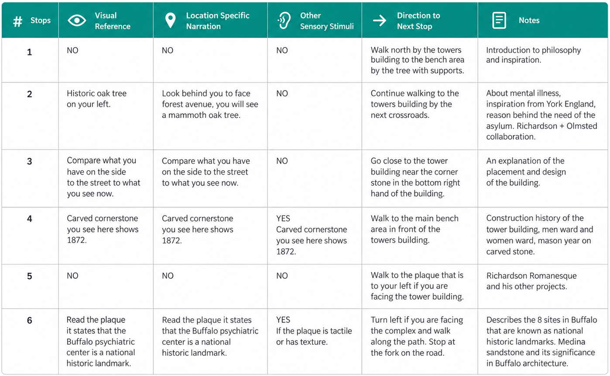

i.
listening to the old tour
I listened to the existing tour several times and logged each of its 15 stops: whether it pointed to something visible, whether it depended on where you stood, what else you could hear or touch, and how it directed you to the next stop.
Many stops asked visitors to look at something, which leaves out a blind visitor.
